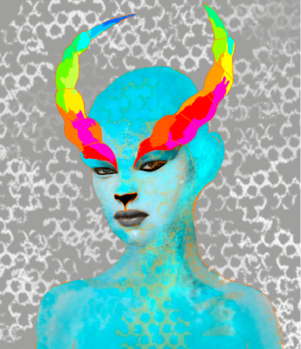

Sobre mi

Soy artista plástica y visual, con más de 9 años de experiencia en la creación de proyectos artísticos y contenidos digitales. Mi práctica se mueve entre el diseño,la imagen, el video y la escritura, entendiendo el arte como un espacio interdisciplinar donde las ideas se transforman en experiencias.
Mi trabajo no busca solo mostrar, sino provocar preguntas.Me interesa explorar la relación entre imagen, emoción y pensamiento, creando propuestas que conecten desde un lugar más sensible que lo visual.
Trabajo desde lo híbrido, donde el arte y lo digital se cruzan para generar nuevas formas de narrar y habitar la realidad.
Experiencia + Habilidades
Trabajo en instituciones culturales desarrollando contenidos gráficos, audiovisuales y procesos de difusión y mediación artística.
Diseño gráfico
Diseño digital
Fotografía
Edición de video
Escritura